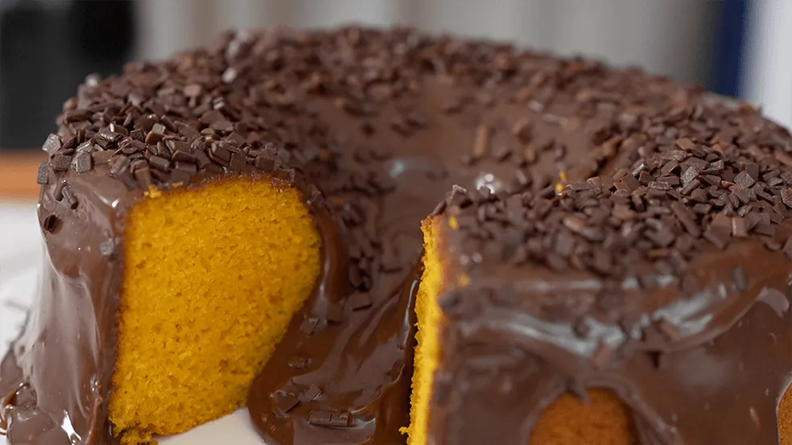

(Para o bolo não solar, não exagere na quantidade de cenoura)
Ingredientes para a massa:
- 3 cenouras médias picadas
- 3 ovos
- 1 xícara de óleo
- 2 xícaras de açúcar
- 2 xícaras de farinha
- 1 colher sopa de fermento
Bata no liquidificador a cenoura, ovos e óleo. Misture com o açúcar e a farinha em uma tigela. Adicione o fermento. Asse em uma forma untada a 180°C.
Ingredientes para o brigadeiro:
- 1 lata/caixa de leite condensado
- 1 colher de manteiga
- 3 colheres de chocolate em pó